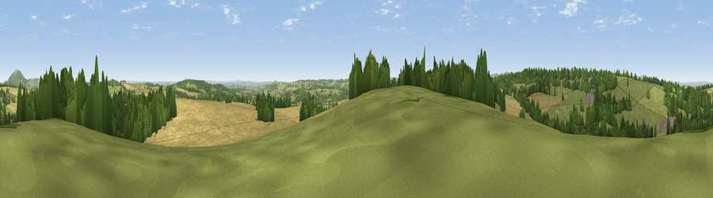

Viewpoint near Much Wenlock
#16112 in England · top 46% of its area beats it · near Much WenlockThe view, rendered

A 360° render of this exact spot computed from the terrain model, tree cover and land cover — summer colours, afternoon light, calibrated against photographs of famous viewpoints. Real trees, hedges and buildings will differ in detail.
The panorama
Grey silhouette: terrain skyline in each direction (720 bearings, Earth curvature and refraction included). Dashed green: skyline with trees (+15 m) and buildings (+8 m) as obstacles. Blue strip: how far the ground is visible on each bearing.
Where the view opens
Wedge length = distance to the farthest visible ground on that bearing (vegetation-aware). Rings at 10, 25 and 50 km.
What fills the view
49% grassland · 30% cropland · 19% woodland · 2% built-up
Angular shares of the visible panorama (visual magnitude), not map area. Landscape diversity 0.48 (0–1 Shannon).
Key numbers
More beautiful places nearby
The staircase of upgrades: each row has a higher view potential than everything closer. Driving times are estimates from straight-line distance, calibrated against real road routing — check an actual route before setting out.
| Place | Direction | Drive | Score |
|---|---|---|---|
| Viewpoint near Harley | NW · 1 km | ~4 min | 79.9 |
| Viewpoint near Little Wenlock | N · 9 km | ~18 min | 86.6 |
| North Hill | SSE · 55 km | ~76 min | 86.8 |
| Worcestershire Beacon | SSE · 56 km | ~78 min | 87.1 |
| Viewpoint near West Quantoxhead | SSW · 164 km | ~186 min | 87.9 |
| Viewpoint near West Quantoxhead | SSW · 165 km | ~186 min | 88.7 |
| Holdstone Hill | SSW · 181 km | ~201 min | 90.2 |
| The Knoll | S · 211 km | ~228 min | 91.0 |
52.58585, -2.57078 · source: screening · position refined by local search. Computed location — check access rights before visiting.